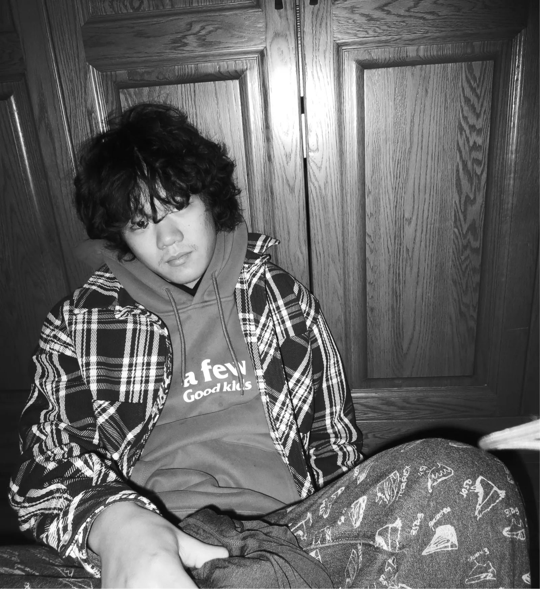

项目经历
-
Sudoku.
独立设计与 AI 开发，已上架。
-
狗GO
交互、视觉与 Quest 3 原型程序。
-
茶弦记
点茶游戏、网页程序与茶筅联动。
-
Arright
独立设计玩法、关卡与界面。
-
良渚 · AI 3D
生成工作流搭建与交互点云。
-
千里江山
山形转译、音光与触摸光纤装置。
-
Design Skills
美式海报风 手绘图标 UI 还原三套设计工作流的整理与编写。
-
漂移之屋
AI 感知漂移的 MR 体验概念。
教育背景
- 研究生
中国美术学院
AI 与智能设计
- 本科
南京工业大学
艺术与设计学院
艺术与科技
个人履历
- 2021 年 参与中建地产平面项目
- 2022 年 负责西藏航空物料设计及落地，交互公众号及其推文
- 2022 年 负责子东设计事务所 logo 设计
- 中国设计教育大会 —— 视觉工作组
- DIA · 中国设计智造大奖 —— 布展策划
- 中国美术学院 · 药食同源 XR 工作坊策划
- 中国美术学院 · 南特国际设计学院 · 空间 XR 联合课程美学指导
主要荣誉
- 大学生创新创业训练计划项目
- 2023 BEDA — 英国生态设计奖
- 2023 BICC — 中英国际创意大赛
- 绚丽年华 · 第十六届全国美育教学成果展
- 东方设计奖 · 全国高校创新设计大赛
- 第 11 届未来设计师 · 全国高校数字艺术设计大赛
- DIA · 中国设计智造大奖